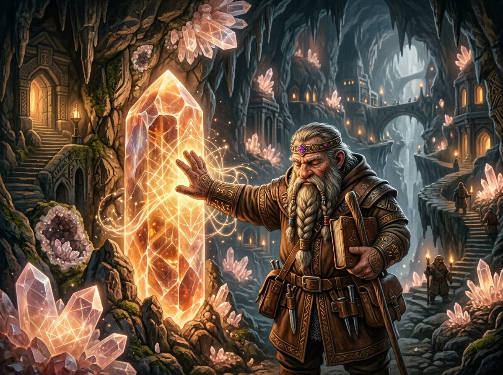
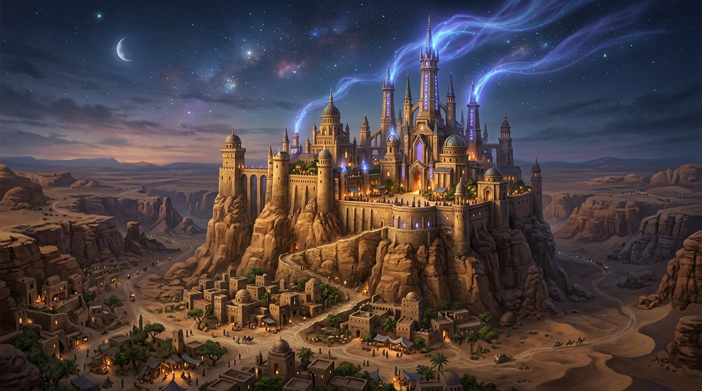
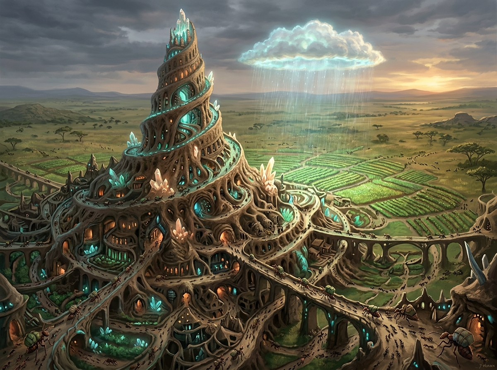

The Second Fire
What if magic evolved like language and was controlled like fire? A showcase of first-principles worldbuilding where physics, species, and centuries of empire collapse are derived from a single natural law.
First-Principles Worldbuilding
Instead of treating magic as an arbitrary spell list or bloodline privilege, The Second Fire treats magic as an environmental substrate—woven into reality like electromagnetism.
The Fire Analogy
Fire is universally accessible, requires no innate gift, scales with technical understanding (a spark vs. a combustion engine), and reshaped human biology (cooked food → smaller guts, larger brains). In this world, magic behaves identically: raw capacity is universal, but skill is cultural, learnable, and compounding.
The Language Analogy
Human sapience co-evolved with language—allowing us to hold abstract concepts in our minds. In this world, the ambient energy (Ether) is responsive to pattern and composition. Spoken and mental grammar directly configures the physical substrate.
The 7 Laws of Cognitive Substrate
Click any physical law below to reveal its operational mechanics and civilizational consequences.
Interactive System Sandbox
Test how the laws of Cognitive Substrate react to demographic and cultural variables.
Environment & Population Controls
Substrate State & Telemetry
The 5 Derived Peoples
Each species is not a fantasy cliché, but a distinct biological adaptation to the 7 Laws of Cognitive Substrate.
Concept Art Gallery: Grounded & Whimsical Lore
Visualizing the key ecological relationships between living beings and the magic field.
Elven Obsessive & Water-Memory
A solitary elf gardener weaving centuries of continuous intention into elderwood roots, grooving the local substrate.

Quartz Dwarf & Terroir Cognition
Dwarves do not have magic inside them; they offload cognition into raw quartz geodes and stone lattices around them.

The Desert College Spires
Because dense casting in cities causes explosive wild magic, high magical learning is forced into remote desert monasteries.

Myrmedon Mound & Rain Halo
Myrmedons are individually weak, but their physical social arrangements act as massive standing rain-summoning spells.
The Historical Engine
How human misunderstandings of physical laws generated centuries of rise, fall, and revolution.
How I Build Worlds
A breakdown of the system design methodology behind The Second Fire.
1. Physical Analogy Anchor
Grounding abstract magic in real physical principles (thermodynamics, metabolic energy, electromagnetism). If magic acts like fire, it must consume fuel and modify the species that uses it.
2. Systemic Species Derivation
Races shouldn't be aesthetic costumes. By deriving Elves, Dwarves, Goblins, and Myrmedons directly from the physics of pattern and substrate, each species becomes a structural specialist.
3. Productive Misunderstanding
History shouldn't move by magic being solved instantly. Civilizations build institutions (liturgies, noble bloodlines, drain temples) on incomplete models, causing recurring, tragic thermodynamic crashes.
Explore Complete Design Documentation
Read the comprehensive 15-page design treatment detailing exact physics, economic trade-offs, and narrative campaign hooks.